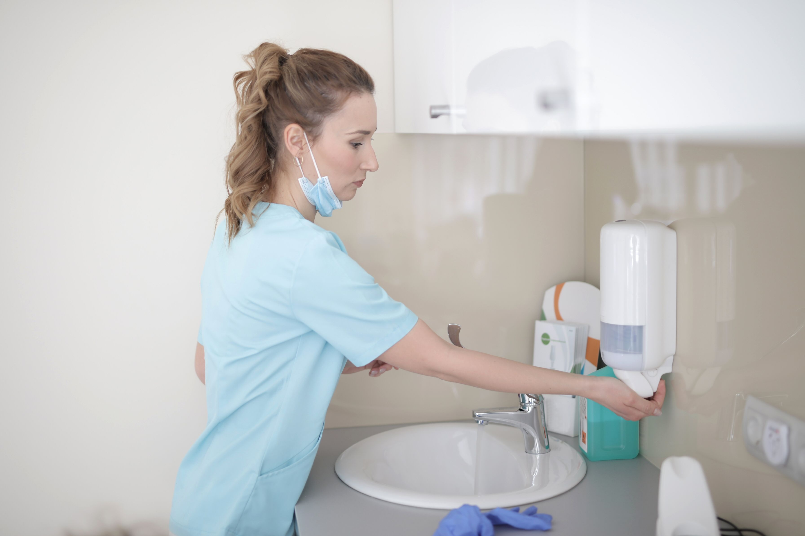

Personal hygiene and preventing infectionတစ်ကိုယ်ရည် သန့်ရှင်းရေးနှင့် ရောဂါကာကွယ်ခြင်း

The doctor's view
ဆရာဝန်၏ အမြင်
Personal hygiene is not only about staying clean and presentable — it is one of the health habits that matters most for preventing disease. Followed properly in daily life, it sharply cuts the chance of catching an infection.
တစ်ကိုယ်ရည် သန့်ရှင်းရေးသည် လှပသန့်ရှင်းနေစေရန်သာမက ရောဂါများကို ကာကွယ်ရန်အတွက်လည်း အရေးကြီးသော ကျန်းမာရေးအလေ့အကျင့်တစ်ခု ဖြစ်ပါသည်။ နေ့စဉ်ဘဝတွင် မှန်ကန်စွာ လိုက်နာခြင်းဖြင့် ကူးစက်ရောဂါများ ဖြစ်ပွားနိုင်ခြေကို များစွာ လျှော့ချနိုင်ပါသည်။
Bacteria and viruses too small for the eye to see are always present on the human body. Some of these germs cause disease, which is why cleanliness deserves attention. Good personal hygiene protects against colds, food poisoning, skin conditions and other infections.
လူ့ခန္ဓာကိုယ်တွင် မျက်စိဖြင့်မမြင်နိုင်သော ဘက်တီးရီးယားများနှင့် ဗိုင်းရပ်စ်များ အမြဲတမ်းရှိနေပါသည်။ အချို့သော ပိုးမွှားများသည် ရောဂါဖြစ်စေနိုင်သောကြောင့် သန့်ရှင်းရေးကို ဂရုစိုက်ရန် လိုအပ်ပါသည်။ တစ်ကိုယ်ရည် သန့်ရှင်းမှုကောင်းမွန်ခြင်းသည် အအေးမိခြင်း၊ အစာအဆိပ်သင့်ခြင်း၊ အရေပြားရောဂါများနှင့် အခြားကူးစက်ရောဂါများကို ကာကွယ်ပေးနိုင်ပါသည်။
Daily hygiene habits
နေ့စဉ် လိုက်နာသင့်သော သန့်ရှင်းရေး အလေ့အကျင့်များ

Wash your hands properly
လက်ကို မှန်ကန်စွာ ဆေးကြောခြင်း
Hands pick up germs easily, so wash them thoroughly with soap before eating, after using the toilet, and when you come home from outside.
လက်သည် ပိုးမွှားများ အလွယ်တကူ ကပ်ငြိနိုင်သော နေရာဖြစ်သောကြောင့် အစားမစားမီ၊ အိမ်သာအသုံးပြုပြီးနောက်နှင့် အပြင်မှပြန်လာသောအခါ ဆပ်ပြာဖြင့် သေချာဆေးကြောသင့်ပါသည်။

Keep your body clean
ကိုယ်ခန္ဓာ သန့်ရှင်းရေး
Bathing regularly removes sweat, dirt and bacteria, and keeps the skin healthy.
ပုံမှန်ရေချိုးခြင်းသည် ချွေး၊ အညစ်အကြေးနှင့် ဘက်တီးရီးယားများကို ဖယ်ရှားပေးပြီး အရေပြားကျန်းမာရေးကို ထိန်းသိမ်းပေးပါသည်။

Wear clean clothes
အဝတ်အစား သန့်ရှင်းရေး
Clean clothing reduces the growth of germs on the skin.
သန့်ရှင်းသော အဝတ်အစားများကို ဝတ်ဆင်ခြင်းသည် အရေပြားပေါ်တွင် ပိုးမွှားများ ပေါက်ပွားမှုကို လျှော့ချပေးနိုင်ပါသည်။
Food and environmental hygiene
အစားအသောက်နှင့် ပတ်ဝန်းကျင် သန့်ရှင်းရေး
Personal hygiene extends beyond the body to the food you eat and the environment you live in. Preparing food in unclean places, or eating without washing your hands, can lead to food poisoning and intestinal disease.
တစ်ကိုယ်ရည်သန့်ရှင်းရေးသည် ခန္ဓာကိုယ်သန့်ရှင်းမှုသာမက မိမိစားသောက်သည့် အစားအစာနှင့် ပတ်ဝန်းကျင်သန့်ရှင်းမှုတို့နှင့်လည်း ဆက်စပ်နေပါသည်။ အစားအစာများကို မသန့်ရှင်းသောနေရာတွင် ပြင်ဆင်ခြင်း၊ လက်မဆေးဘဲ စားသောက်ခြင်းတို့သည် အစာအဆိပ်သင့်ခြင်းနှင့် အူလမ်းကြောင်းဆိုင်ရာ ရောဂါများ ဖြစ်စေနိုင်ပါသည်။

Choose and handle food safely
သန့်ရှင်းသော အစားအစာရွေးချယ်ခြင်း
Wash fruit and vegetables thoroughly, keep meat and vegetables separate, and hold cooked food at a safe temperature.
အသီးအနှံများကို သေချာဆေးကြောခြင်း၊ အသားနှင့် ဟင်းသီးဟင်းရွက်များကို သီးခြားခွဲထားခြင်း၊ ချက်ပြုတ်ပြီးသောအစားအစာများကို သင့်တော်သောအပူချိန်တွင် ထားရှိခြင်းတို့ကို ဂရုစိုက်သင့်ပါသည်။
Keep your surroundings clean
ပတ်ဝန်းကျင် သန့်ရှင်းရေး
Keeping your home, workplace and surroundings clean reduces the breeding of germs.
နေအိမ်၊ အလုပ်နေရာနှင့် ပတ်ဝန်းကျင်ကို သန့်ရှင်းစွာ ထားခြင်းသည် ပိုးမွှားများ ပေါက်ဖွားမှုကို လျှော့ချပေးနိုင်ပါသည်။
Coughs and sneezes
ချောင်းဆိုး၊ နှာချေရာတွင် ရောဂါကာကွယ်ခြင်း
To stop diseases that spread through the airway, it helps to follow a few simple habits when coughing and sneezing.
အသက်ရှူလမ်းကြောင်းမှတစ်ဆင့် ကူးစက်သောရောဂါများကို ကာကွယ်ရန် ချောင်းဆိုးခြင်းနှင့် နှာချေခြင်းအတွက် မှန်ကန်သော အလေ့အကျင့်များကို လိုက်နာရန် လိုအပ်ပါသည်။
Wear a mask
Mask အသုံးပြုခြင်း
Wearing a mask while unwell, or in crowded places, reduces the spread of germs.
ဖျားနာနေချိန် သို့မဟုတ် လူများသောနေရာများတွင် Mask တပ်ဆင်ခြင်းသည် ရောဂါပိုးများ ပျံ့နှံ့မှုကို လျှော့ချပေးနိုင်ပါသည်။
Keep hands off your face
လက်ဖြင့် မျက်နှာမထိခြင်း
Germs on your hands can enter the body through the eyes, nose and mouth.
လက်တွင် ကပ်နေသော ပိုးမွှားများသည် မျက်လုံး၊ နှာခေါင်းနှင့် ပါးစပ်မှတစ်ဆင့် ခန္ဓာကိုယ်အတွင်း ဝင်ရောက်နိုင်ပါသည်။
Cover up with a tissue
တစ်ရှူးဖြင့် ဖုံးအုပ်ခြင်း
When you cough or sneeze, cover your mouth with a tissue or the inside of your elbow — not your hand.
ချောင်းဆိုး၊ နှာချေသောအခါ လက်ဖြင့်မဖုံးဘဲ တစ်ရှူး သို့မဟုတ် တံတောင်ဆစ်အတွင်းပိုင်းဖြင့် ဖုံးအုပ်သင့်ပါသည်။
Learn moreအသေးစိတ် လေ့လာရန်
- Food poisoning — bacteria entering through unclean food or unwashed hands can cause diarrhoea and vomiting.
- Skin conditions — without adequate body hygiene, itching, fungal infections and skin infections can develop.
- Infectious diseases — unwashed hands and unclean surroundings lead to colds, flu and other infections.
- အစာအဆိပ်သင့်ခြင်း — မသန့်ရှင်းသောအစားအစာနှင့် လက်မှတစ်ဆင့် ဘက်တီးရီးယားများဝင်ရောက်ခြင်းကြောင့် ဝမ်းလျှောခြင်း၊ အန်ခြင်းတို့ ဖြစ်နိုင်ပါသည်။
- အရေပြားရောဂါများ — ကိုယ်ခန္ဓာသန့်ရှင်းမှု မလုံလောက်ပါက အရေပြားယားယံခြင်း၊ မှိုစွဲခြင်းနှင့် အရေပြားပိုးဝင်ခြင်းများ ဖြစ်နိုင်ပါသည်။
- ကူးစက်ရောဂါများ — လက်မဆေးခြင်းနှင့် မသန့်ရှင်းသောပတ်ဝန်းကျင်သည် အအေးမိခြင်း၊ တုပ်ကွေးနှင့် အခြားကူးစက်ရောဂါများကို ဖြစ်စေနိုင်ပါသည်။
- Before preparing food and before eating
- After using the toilet
- When you get home from outside
- After coughing or sneezing
- After caring for someone who is ill
- အစားအစာ မပြင်ဆင်မီနှင့် မစားမီ
- အိမ်သာ အသုံးပြုပြီးနောက်
- အပြင်မှ အိမ်ပြန်ရောက်သောအခါ
- ချောင်းဆိုး၊ နှာချေပြီးနောက်
- နာမကျန်းသူကို ပြုစုပြီးနောက်
The doctor's advice
ဆရာဝန်၏ အကြံပြုချက်
Washing your hands with soap for 20 seconds is the cheapest and most effective disease prevention there is. It is worth making a habit for the whole family.
ဆပ်ပြာဖြင့် စက္ကန့် ၂၀ ကြာ လက်ဆေးခြင်းသည် ဈေးအသက်သာဆုံးနှင့် အထိရောက်ဆုံး ရောဂါကာကွယ်ရေး နည်းလမ်းဖြစ်ပါသည်။ မိသားစုတစ်ခုလုံး အလေ့အကျင့်အဖြစ် မွေးမြူသင့်ပါသည်။
Last reviewed: August 2026 · Reviewed by the MedCare medical editorial team.
နောက်ဆုံးပြန်လည်သုံးသပ်သည့်ရက် — ဩဂုတ် ၂၀၂၆ · MedCare ဆေးပညာ တည်းဖြတ်အဖွဲ့မှ စိစစ်ပြီး။
All articlesဆောင်းပါးအားလုံး